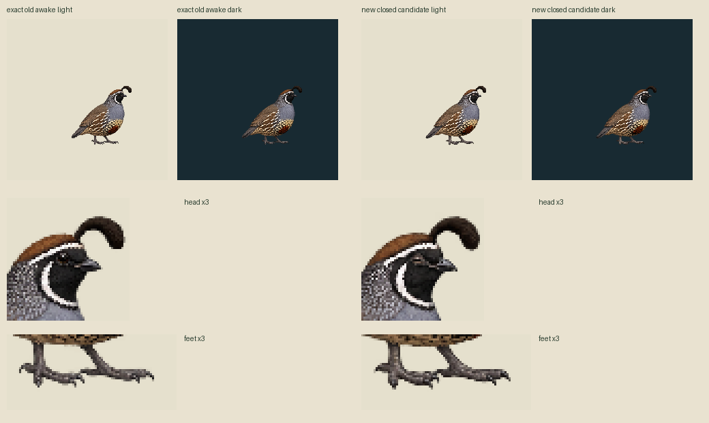

One new closed eye + exact existing awake. Body/feet redraw retained for independent review. Output384 at density1.625, normal canvas236.307692 CSS/world pixels. Fixed inherited pivot228,300; no translation. Inherited toe probes remain visible toe-region pixels; physical support not approved. Source-only; no Mac binding or physical contact approval.
Authored30Hz:42open /3closed /45open (100ms closure). Exact old awake-only idle90 is separate and unchanged. Final sample89 stays awake through the3000ms deadline. Two drawings, no claimed body animation or biological timing claim.

PNG/APNG retain RGBA; GIF is a palette preview on a fixed light background. No alpha cleanup, body fitting, snapping or painting.
Primary provenance · Review profile · Exact action map · Geometry probes · Alpha edge diagnostics